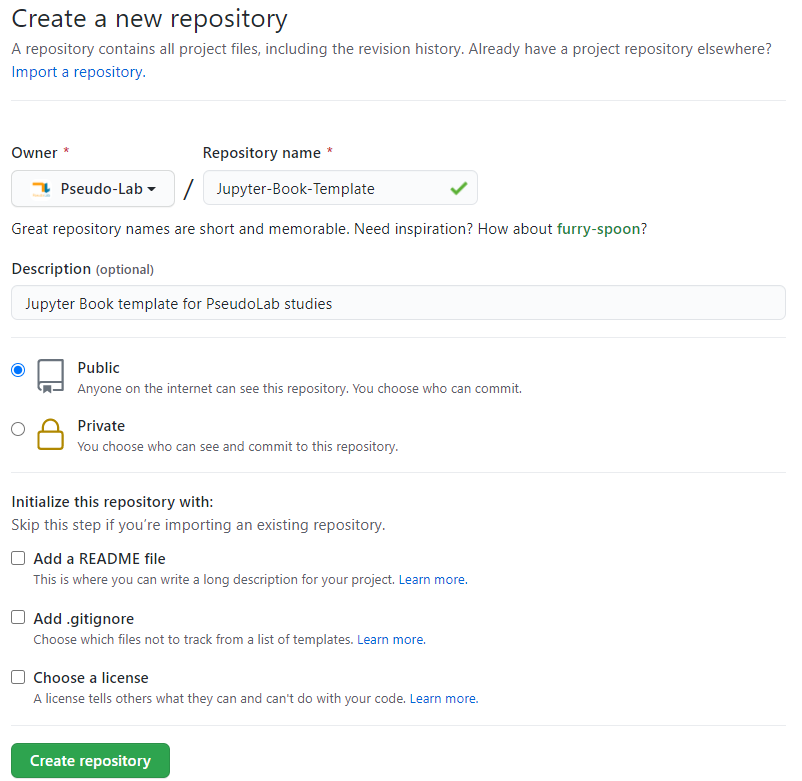
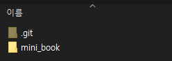

Step 3. Github Pages를 통한 배포¶
step 1과 2를 통해 Jupyter Book에서 제공하는 quantecon-mini-example template을 본인 니즈에 맞게 수정하고, 로컬에서 수정된 template을 build하는 것까지 실습했다. 이번 단계에서는 새로운 template을 웹으로 배포하는 것을 알아보고자 한다.
1. Github Repository 생성¶
우선 본인이 구축한 Jupyter Book template을 저장할 원격 repository를 생성한다. 이 때 README 파일은 추가 하지 않는다.

2. git clone 및 mini_book 폴더 이동하기/이름 변경¶
그리고 나서 생성된 repo를 로컬 환경에 clone한다.
git clone https://github.com/Pseudo-Lab/Jupyter-Book-Template.git
clone 명령어 뒤에 본인이 생성한 repo 주소를 입력하면 된다.
step 1과 step 2의 작업물의 최종본은 현재 quantecon-mini-example 폴더 내의 mini_book 폴더에 모두 위치하고 있을 것이다. mini_book폴더 전체를 clone한 폴더로 이동 시켜 준다. 필자 같은 경우 Jupyter-Book-Template 폴더에 mini_book폴더를 이동 시켜 아래와 같은 구조가 생성 됐다.

또한, 편의를 위해 mini_book폴더명을 book으로 변경해주겠다.
3. README.md 작성¶
필요시 README.md 작성을 진행하면 된다. 이 때, README 파일은 book 밖에 위치하도록 해준다. Jupyter Book은 모든 .md 파일 및 .ipynb파일을 build 시키는데, book내부에 README 파일이 위치할 경우, 원치 않은 README.md 파일로 인해 build시 오류가 발생할 수 있기 때문이다.
4. 로컬 repo와 원격 repo 동기화¶
git add, git commit, git push 명령어를 통해 로컬에서 진행한 변경사항을 원격 repo에 push 해준다.
cd Jupyter-Book-Template
git add .
git commit -m "adding my first book!"
git push
5. ghp-import 활용한 배포¶
우선 아래 명령어로 ghp-import를 설치한다.
pip install ghp-import
그 후 다음 명령어를 활용해 gh-pages branch에 html파일을 적재한다.
ghp-import -n -p -f book/_build/html -m "initial publishing"
jupyter-book build를 통해 만들어진 html파일들이 _build/html폴더 내에 저장돼어 있으므로, 해당 파일 전체를 gh-pages branch에 저장하여 Github Pages 시스템으로 웹 배포를 진행하는 것이다.
[본인 Github Name].github.io/[repo명] 링크로 접속하면 배포된 Jupyter Book을 볼 수 있다. 이번 예시에서 만든 template은 아래 링크에 배포돼었다.
https://pseudo-lab.github.io/Jupyter-Book-Template/